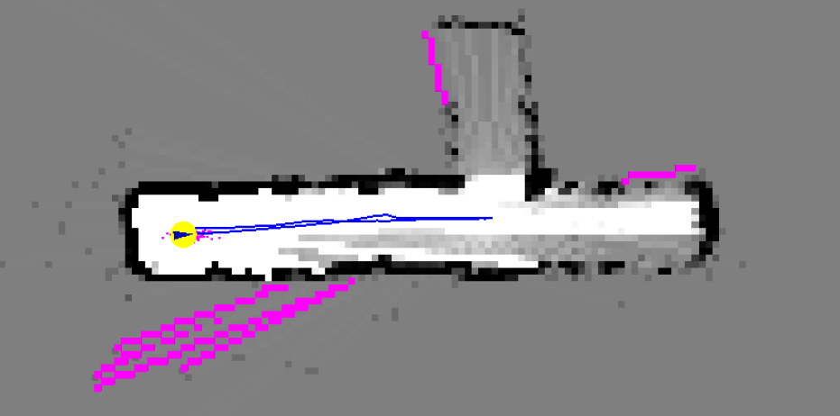
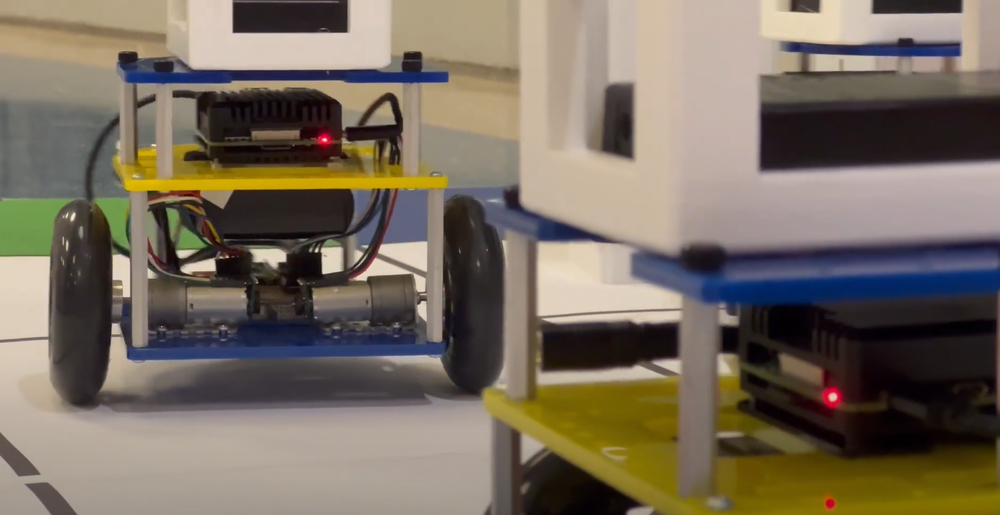
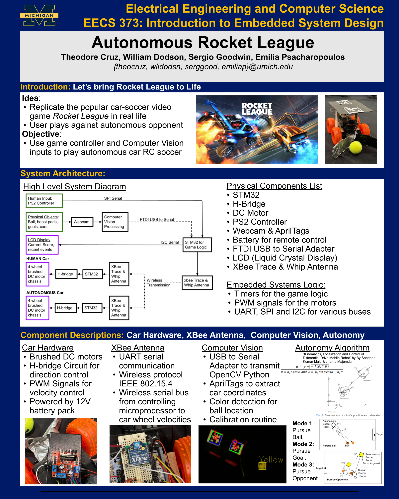
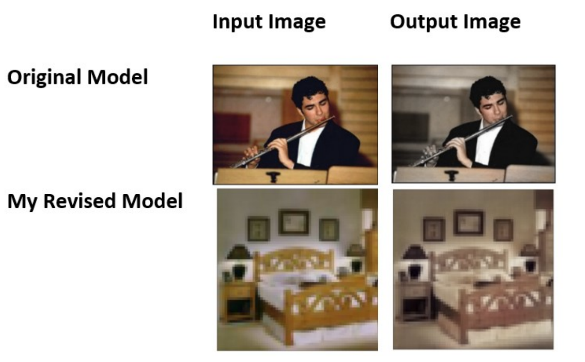
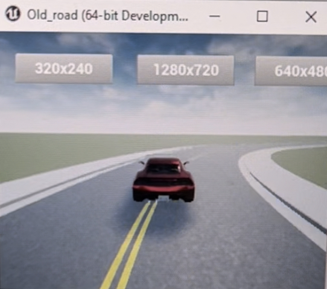
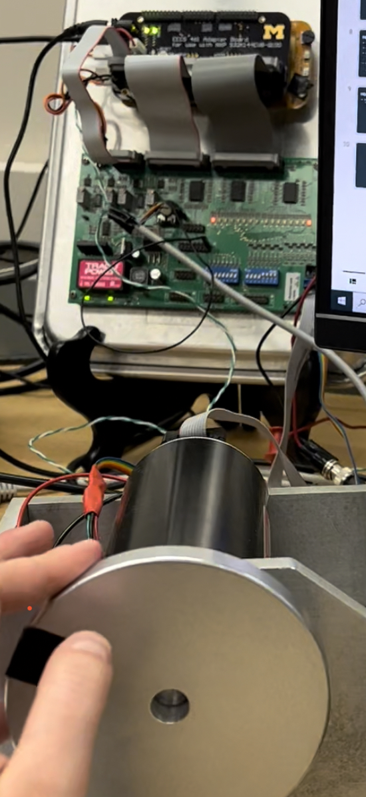
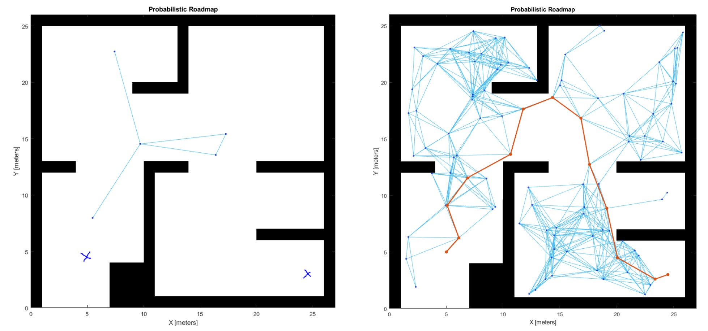
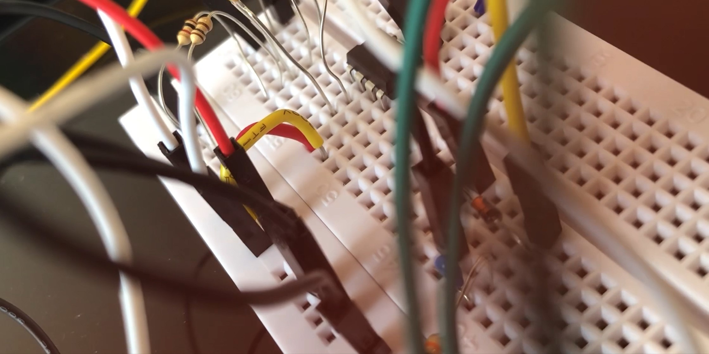

ACADEMIC PROJECTS
Computer Engineering Coursework
- EECS 200: Electrical Engineering Systems Design I
- EECS 201: Computer Science Pragmatics
- EECS 203: Discrete Mathematics
- EECS 215: Introduction to Electronic Circuits
- EECS 216: Introduction to Signals and Systems
- EECS 230: Electromagnetics I
- EECS 270: Introduction to Logic Design
- EECS 280: Programming and Intro Data Structures
- EECS 281: Data Structures and Algorithms
- EECS 301: Probabilistic Methods in Engineering
- EECS 351: Digital Signal Processing and Analysis
- EECS 370: Intro to Computer Organization
- EECS 373: Introduction to Embedded System Design
- EECS 442: Computer Vision
- EECS 461: Embedded Control Systems
- EECS 467: Autonomous Robotics
- TCHNCLCM 300: Technical Communication for Electrical and Computer Science
- TCHNCLCM 496: Advanced Technical Communication for Electrical Engineering and Computer Engineering
Mathematics Coursework
Multi-Agent Path Planning and Collision Avoidance Algorithm • Winter 2023
I selected EECS 467: Autonomous Robots for my degree's Major Design Experience (MDE) to culminate my studies at Michigan. My team and I designed and successfully demonstrated a multi-agent path planning and collision avoidance algorithm. While designing the algorithm, we opted to build upon the Conflict-Based Search (CBS) algorithm due to its completeness and optimality. I collaborated with a teammate to set up the TCP server and clients, and together we designed and implemented path-following logic that translated a 2D array of the robot's path into linear and angular velocities. Additionally, my teammate and I configured a PID controller for each M-Bot to ensure smooth operation during real-world testing. I developed the testing suite for our real-world simulations by creating testing scenarios, designing the simulation field, and constructing the testing matrix. Ultimately, we conducted six trials with Michigan's M-Bots to evaluate the system's performance across varying levels of map complexity. For more information, please refer to our team’s GitHub and final project video attached below for more information.
 |
Autonomous Path Planning with LIDAR • Winter 2023
EECS 467: Autonomous Robots also combined engaging lectures with hands-on labs to explore various fascinating topics in the field. We delved into robot perception, world mapping, and control, using physical robots to bring our learning to life. The curriculum covered essential concepts such as sensors and sensor processing, motion planning, and Simultaneous Localization and Mapping (SLAM). Additionally, we tackled forward and inverse kinematics, as well as computer vision and artificial intelligence methods, all of which provided a comprehensive understanding of how autonomous systems operate in the real world.
|  |  |  |
"Autonomous Rocket League" Embedded System Design • Fall 2022
I collaborated with a four-person team in EECS 373: Introduction to Embedded System Design to create a human vs. robot version of the popular car-soccer video game Rocket League in real life. Most significantly, I researched and designed our team’s autonomous Rocket League algorithm; my design process is featured in a video among the attached summary materials. I led the coding efforts in C for various embedded system components, including a magnetometer, gameplay timers, PlayStation 2 controller SPI communication, and a USB-to-Serial adapter. Additionally, I developed our team's computer vision Python script for detecting AprilTags and colors on the soccer field. My technical communication contributions included designing system engineering diagrams, writing a milestone report, and creating the project poster.
|  |
Colorization Model Replication with Loss Function Analysis • Fall 2022
My experience in EECS 442: Computer Vision was both challenging and rewarding as I explored the intricacies of image colorization. Writing a final report allowed me to delve deeply into the mechanics of a novel Colorization Model, where I replicated its architecture and evaluated its performance using Mean Squared Error and Cross Entropy. This hands-on project not only strengthened my understanding of key concepts like upsampling, convolutional layers, and gradient computations but also highlighted the limitations of certain loss functions in achieving optimal results. Ultimately, I gained valuable insights into the complexities of neural networks and their application in image processing.
|  |
Adaptive Cruise Control Embedded System • Winter 2022
For our final project in EECS 461: Embedded Control Systems, we were tasked with building an Adaptive Cruise Control (ACC) system using Simulink, featuring auto-steering and automatic cycling through three modes:
- Manual: This mode allows the user to control the speed and path of the car using a potentiometer on the control board and a haptic wheel.
- Velocity: This mode specifies the car’s traveling speed through dip switches on the microcontroller.
- Position: This mode activates when a lead car is within a preset distance and traveling slower, prompting our car to match its speed.
|  |  |
Digital Signal Processing Optical Character Recognition • Winter 2022
I collaborated with a five-person student project team in EECS 351: Digital Signal Processing to develop a machine learning algorithm that allows users to input a screenshot of a lecture board and receive a well-formatted LaTeX document of those notes. Our project architecture comprised four subsystems:
- Image processing and filtering of the lecture screenshot.
- Isolating each individual character.
- Classifying each individual character.
- Outputting the classified characters to a LaTeX document.
Probabilistic Roadmap Path Planning Study • Winter 2022
In MATH 462: Mathematical Modeling, my project partner and I chose to investigate the efficiency of an autonomous bicycle robotic model in Simulink. We conducted an in-depth analysis of the existing model's control system, vehicle dynamics, and the robustness of the Probabilistic Roadmap path planning algorithm. Additionally, we extended our study by developing our own model of vehicle dynamics using continuous time integration and compared it with the discrete time integration technique employed in the original model. This research paper details our findings.
Algorithmic Software Design • Winter 2022
EECS 281: Introduction to Data Structures and Algorithms is the primary introductory course for computer scientists at the University of Michigan, focusing on balancing space and time trade-offs in algorithmic implementations. Among all the material covered, the most challenging task was designing our own simplified version of Structured Query Language (SQL). The "SillyQL" project rigorously tested my understanding of various data structures and hash tables, as I worked to efficiently parse large datasets to extract desired information.
AM Superheterodyne Radio Receiver • Winter 2021
In EECS 216: Introduction to Signals and Systems, I built the back end of a functioning superheterodyne AM radio using resistors, capacitors, op-amps, diodes, and an audio speaker. This involved constructing a bandpass filter to allow only a specific range of frequencies, an envelope detector to demodulate the signal, and an output amplifier to boost the audio signal, all connected in series to the speaker. I tested my radio by tuning the local oscillator frequency to isolate individual broadcast stations.
